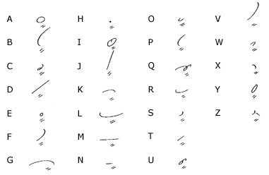
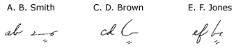
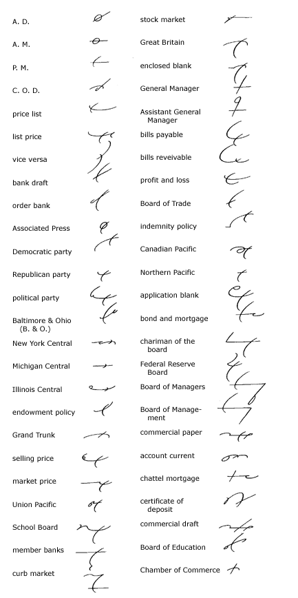
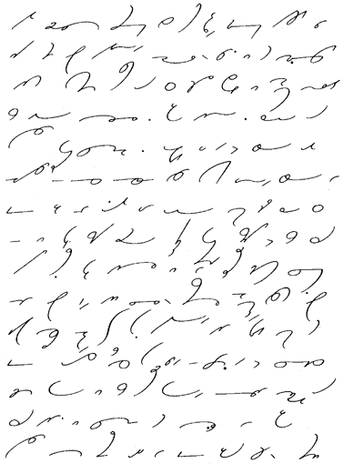

Unit 33
Initials
233.
Since there is no context to initials, writing them accurately
is very important.

234.
Many writers prefer to write initials in longhand, and if
this is done, a great saving in time may be effected by writing
them in small letters and joining the letters, thus:

Intersection
235.
The expedient known as intersection, or the writing of one
character through another, is sometimes useful for special phrases.
In applying this expedient the writer must rely very heavily
upon his own judgment. In his daily work as a stenographer
or reporter, he may find some terms peculiar to the business in
which he works occurring so frequently that special forms may
be adopted for them that will be brief and yet absolutely distinctive.
Very often the writing of one character through another
will meet the exigency. The following are useful examples:

236.
Reading and Dictation Practice.

237. Writing
Practice
1. It transpired that he did
not aspire to the office himself but was conspiring to overthrow
the incumbent.
2. Intensive study of the actual conditions
of the conflict ought to make it possible to prevent the recurrence
of this emergency.
3. Without a considerable body of experimental
data it is impossible to formulate physiological rules with reliability.
4 In the extremity, the sublimity and nobility
of his character were revealed with inspiring clarity.
5. The floods were a national calamity in
which thousands were injured, to say nothing of the financial
losses inflicted on all the people in that territory.
6. It will probably require the services of
many stenographers to answer all the inquiries about the branches
of this extensive business, and I myself shall take care of those
of great urgency.
7. One of the finest things a teacher can
do is to inspire the student to make proper use of his leisure
time, to give some time to reflection and thought
8. Nobility of thought, adaptability of ideas,
and generosity of nature—these are the fundamental requisites
for those who would have the real rewards of life.
9. His phraseology seems to call for an apology
on his part; the other members of the partnership were not backward
in sending him a notification to that effect
10. He employed all his great ability in writing
an interesting article on the politics of this locality. As he
wrote with authority, and had every justification for what he
said, his article had a certain degree of popularity with the
majority.
Transcription Key to this
Unit
- Next Unit - |